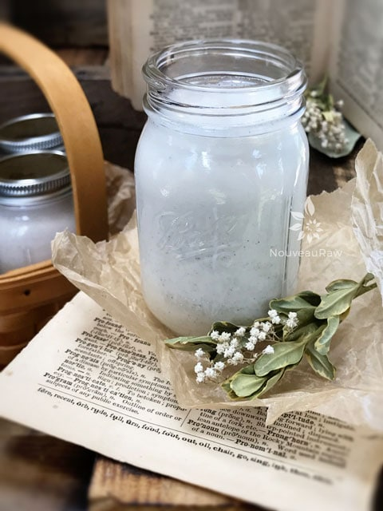

~ raw, vegan, gluten-free, nut-free, Paleo ~
Non-dairy milk was once just a vegan-only trend for those in search of solutions for their lactose-indifferent ways, but this just isn’t the case anymore. You don’t have to have any special dietary restrictions to enjoy these hip, delicious, and nutritious drinks.
So just to reiterate… this recipe is dairy-free, vegan, gluten-free, grain-free, nut-free, peanut-free, soy-free, plant-based, vegetarian, sugar-free, paleo, raw, and top food allergy-friendly (takes a deep breath). I think that covers most of the bases.
As I mentioned already, hemp seed milk is highly nutritious. Did you know that hemp seeds are a complete protein, with all 10 amino acids?
They also contain calcium, magnesium, iron, potassium, fiber, B vitamins, and omega-3 fatty acids. They support heart health, healthy skin and hair, plus boosts the immunity system. All that in a tall glass of hemp milk. It’s true… milk does a body good! So let’s talk about ingredients and flavor options. First off…
Hulled versus Unhulled Hemp Seeds
Hulled hemp seeds have the outer crunchy shell removed, and is also referred to as; hemp hearts shelled hemp seed, and hemp nut. Raw hulled hemp seeds have a delicate ivory color with green flecks and have a nutty, yet mild grassy flavor. If you use whole (unshelled) hemp seeds, you will need to strain the hemp milk through a nut milk back to remove the outer hard husk.
Why I add sunflower lecithin:
Sunflower lecithin is made up of essential fatty acids and B vitamins. It helps to support healthy function of the brain, nervous system, and cell membranes. It also lubricates joints and helps break up cholesterol in the body. It comes in two forms, powder and liquid. I prefer the raw, powdered sunflower lecithin. Setting aside all the nutritional benefits, it is a natural emulsifier that binds natural fats with water creating a creamy consistency.

Additional Flavor Options:
Raw Cacao Powder
- Raw cacao powder contains more than 300 different chemical compounds and nearly four times the antioxidant power of your average dark chocolate – more than 20 times than that of blueberries.
- Studies have shown that chocolate affects your emotions and mood by raising serotonin levels, which explains why chocolate is often craved when gloominess looms. Also to the rescue is a neurotransmitter called theobromine, a mild stimulant sometimes used as a treatment for depression. (source)
- Adding the pinch of salt and vanilla will help reduce bitterness and elevate the sweetness of any added sweetener.
- Note: Cacao does have caffeine, so be careful if you are sensitive to it.
Matcha Hemp milk:
- It is great for promoting mental clarity and alertness. Again be careful if you’re sensitive to caffeine.
- Matcha powdered green tea has 137 times more antioxidants than regularly brewed green tea.
- Detoxifies effectively and naturally
- Calms the mind and relaxes the body
- Is rich in fiber, chlorophyll, and vitamins
- Enhances mood and aids in concentration
- Provides vitamin C, selenium, chromium, zinc and magnesium
- Prevents disease
- Lowers cholesterol and blood sugar
- (source)
Turmeric Hemp Milk:
- It has natural anti-inflammatory properties.
- Its beautiful golden color will brighten your day.
- It has a slightly astringent and bitter flavor profile, but this will tame down with the addition of a sweetener.
- The oil and black pepper are needed so the body can naturally absorb all of the health benefits of Turmeric.
Ok, I think this is a good start for how and why to make Hemp Milk. There are oodles and oodles of variations to be made, so use what I share below as a platform to dive off of. Enjoy and have a blessed day, amie sue